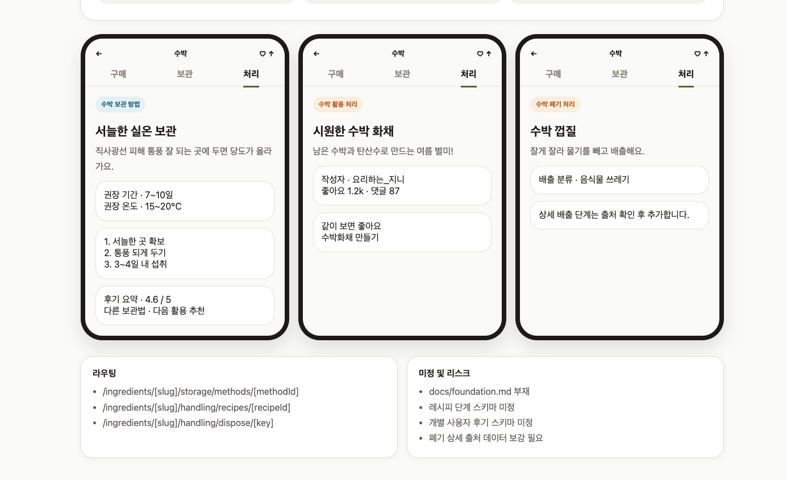
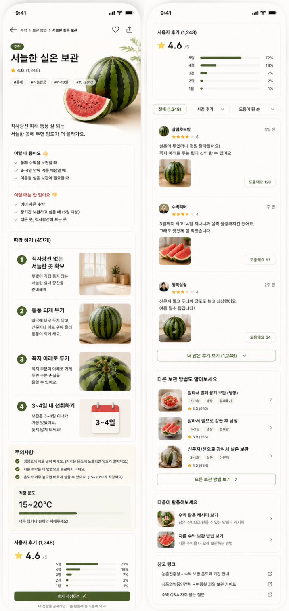

카드 탐색에서 실행 가능한 처리 상세로 이어진다
처리 탭의 활용 카드와 폐기 카드를 누르면 각각 레시피 상세와 분리배출 상세로 이동한다. 활용은 UGC 정보, 폐기는 근거 기반 안내를 중심으로 정보 위계를 분리한다.
참조 이미지 반영
보관 카드, 활용 처리 카드, 폐기 처리 카드를 클릭했을 때 나오는 상세 화면을 만든다. 처리 영역은 보관 예시와 유사한 상세 구조를 쓰되, 활용과 폐기의 정보 성격을 나눈다.
참조 이미지
아래 이미지는 구현 에셋이 아니라 상세 페이지의 화면 구조와 정보 위계를 맞추기 위한 기획 레퍼런스다.

보관 카드, 활용 처리 카드, 폐기 처리 카드를 누르면 각각 별도 상세 화면으로 이동한다.

보관 상세는 방법 히어로, 추천/비추천 상황, 단계, 주의사항, 적정 온도, 후기 요약, 다른 보관법, 다음 활용, 참고 링크로 구성한다.
방법명, 요약, 기간, 온도, 추천/비추천 조건, 단계, 주의사항, 후기 요약, 다른 보관법, 다음 활용, 참고 링크를 보여준다.
레시피 제목, 설명, 작성자, 반응, 참고 영상을 보여준다. 상세 단계는 데이터 확정 후 확장한다.
배출 분류, 배출 방법, 이유, 단계, 주의점, 지역 차이, 출처를 보여준다.
사용자 흐름
보관/활용/폐기 카드 중 하나를 누른다.
실행에 필요한 단계와 근거를 확인한다.
다른 방법을 비교하거나 처리 탭으로 돌아간다.
서늘한 실온 보관
직사광선 피해 통풍 잘 되는 곳에 두면 당도가 올라가요.
권장 온도 · 15~20℃
2. 통풍 되게 두기
3. 3~4일 내 섭취
다른 보관법 · 다음 활용 추천
시원한 수박 화채
남은 수박과 탄산수로 만드는 여름 별미!
좋아요 1.2k · 댓글 87
수박화채 만들기
수박 껍질
잘게 잘라 물기를 빼고 배출해요.
- /ingredients/[slug]/storage/methods/[methodId]
- /ingredients/[slug]/handling/recipes/[recipeId]
- /ingredients/[slug]/handling/dispose/[key]
- docs/foundation.md 부재
- 레시피 단계 스키마 미정
- 개별 사용자 후기 스키마 미정
- 폐기 상세 출처 데이터 보강 필요